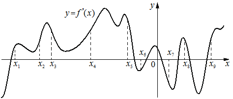

На рисунке изображён график — производной функции На оси абсцисс отмечено девять точек: Сколько из этих точек принадлежит промежуткам убывания функции ?

КЭС: 3.2 Область определения и множество значений функции. Нули функции. Промежутки знакопостоянства. Промежутки монотонности функции. Максимумы и минимумы функции. Наибольшее и наименьшее значение функции на промежутке; 4.2 Применение производной к исследованию функций на монотонность и экстремумы. Нахождение наибольшего и наименьшего значения функции на отрезке